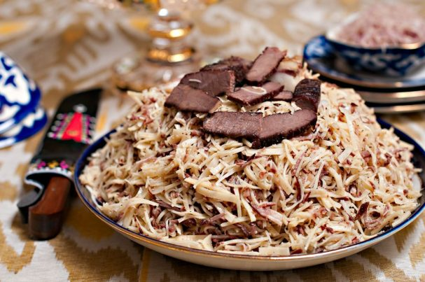

Лагман - одно из самых распространенных блюд в меню любого кафе, ресторана, столовой Узбекистана. Его обязательно стоит попробовать! Но отметим, что если Вам подали длинную лапшу (уйгурский лагман), то придется запастись терпением. Блюдо очень вкусное, но чтобы приноровиться его есть, потребуется время и немного практики. В большинстве ресторанов Ташкента чаще готовят именно уйгурский лагман, узбекский же лагман больше распространен в Бухарской, Самаркандской областях и в Ферганской долине.
На базарах Узбекистана часто продают практически готовую лапшу для лагмана, ее остается только залить бульоном, мясной поджаркой и щедро украсить зеленью (лук, кинза, укроп, сельдерей, петрушка).
Вот один из рецептов, описывающий, как приготовить узбекский лагман:
Продукты: Для теста:
Баранина - 500 гр.
Мясной бульон - 3 стакана.
Картофель - 3 шт.
Репа - 1 шт.
Лук репчатый - 5 шт.
Чеснок - 1 зубчик.
Горох (нухат) - 2 ст.л.
Растительное масло - 0,5 стакана.
Томатная паста - 2 ст. л.
Зира.
Соль, перец по вкусу.
Мука - 400 гр.
Желтки - 3 шт.
Молоко - 0,5 стакана.
Norin

Нарын — это замечательный ворох тонко нарезанной особой лапши с соломкой мяса, луком и черным перцем, залитый ароматным горячим бульоном.
Любая хорошая хозяйка в Узбекистане должна уметь готовить нарын, если вы до сих пор не умееете, тогда следуйте нашему рецепту и это замечательное блюдо у вас получится.
Шаг 1
В большой кастрюле поставить вариться бульон, по желанию в него можно добавить целую луковицу и морковь. Они сделают бульон более насыщенным.
Как закипит снять пенку, уменьшить огонь и варить 1,5 - 2 часа.
За пол часа до окончания варки - посолить.
Шаг 2
Готовый бульон остудить, мясо вынуть из бульона и остудить отдельно.
Шаг 3
Смешать муку, яйцо, 500 миллилитров бульона, в котором варили мясо, и замесить тесто.
Шаг 4
Готовое тесто отправить в холодильник на 4-6 часов, а лучше на ночь.
Шаг 5
Отдохнувшее тесто раскатать в пласт толщиной 1,5 мм и нарезать на квадраты 10х10 см.
Шаг 6
Затем отварить кусочки теста в половине от всего бульона. Отваривать примерно по 30-40 секунд, не дольше.
Отваренные кусочки разложить на столе на ткани, чтобы избавиться от лишней влаги. Так тесто в дальнейшем впитает лучше масло.
Шаг 7
Затем каждый квадрат обмажьте подогретым заранее подсолнечным маслом и сложите слои как наполеон. Оставить тесто отдыхать на 2-3 часа.
Шаг 8
Только потом нарезать тонкой соломкой тесто и мясо. Приправить зирой и перцем. Добавьте немного прокаленного подсолнечного масла и перемешать.
Подавать с бульоном и ломтиками казы.